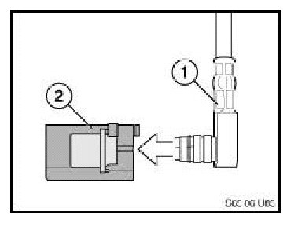
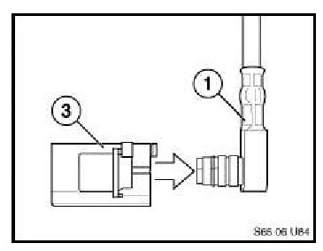
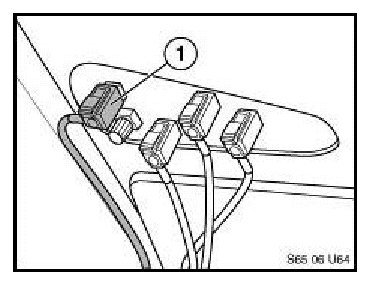

Audio System - SIRIUS(R) Satellite Radio Inoperative
SI B 65 30 06Sound System, Cruise, Alarms, Monitors
January 2007
Technical Service
This Service Information bulletin supersedes S.I. 65 30 06 dated October 2006.
[NEW] designates changes to this revision
SUBJECT
SIRIUS Satellite Radio is Inoperative
MODEL
E83 (X3) with SDARS
[NEW] From August 2006 to October 16th, 2006
SITUATION
The SIRIUS Satellite radio is inoperative.
NEW CAUSE
The SDARS antenna in the shark fin and the connector on the SDARS coax cable coming from the receiver is incorrect.
There are two connectors on the SDARS antenna instead of only one and the color coding of the connector on the coax cable is incorrect.
NEW CORRECTION
Install the correct connector on the SDARS coax cable connecting to the shark fin antenna.
NEW PROCEDURE
1. Remove the rear roof trim to get enough space to access the connectors on the SDARS antenna, refer to RA 51 44 013 (Removing and installing roofliner).

2. Disconnect the violet connector on the shark fin antenna and remove the violet housing (2) from the coax cable (1). Note: Unlock the locking tab first when removing the housing.

3. Install the white housing (3) onto the coax cable (1).
Note: Assure that the locking tab (violet part) is fully engaged.

4. Connect the white antenna connector to the white connector (1) on the shark fin antenna and the other connectors to the color coded connectors.
5. Test the proper function of the SIRIUS Satellite radio.
6. Re-assemble the roof trim.
NEW PARTS INFORMATION
NEW WARRANTY INFORMATION
Covered under the terms of the BMW New Vehicle Limited Warranty.
Defect Code 61 11 90 23 00
Labor Operation: 00 56 343
Labor Allowance: 13 FRU
Labor Operation: + 00 56 993
Labor Allowance: 11 FRU
Note:
The following explanations will spell out the correct use of the work times.
Main Work:
Use this labor operation number when the only repair performed is the listed warranty repair.
OR
Use this labor operation number when other repairs or services are performed along with the listed warranty repair.
+Associated Work:
Under no circumstances should both labor operation numbers be claimed. Attempts to claim both times will result in an unnecessary delay in claim processing and payment.

Disclaimer